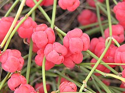
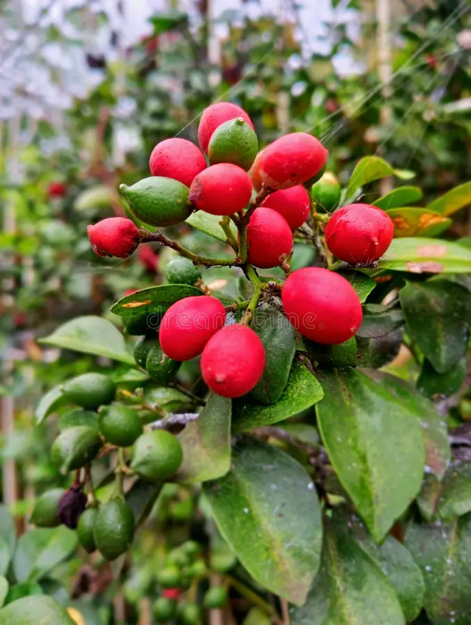

Ephedraceae

- Arbustos xerófitos
- Tallos verdes fotosintéticos
- Hojas muy reducidas
- Aspecto articulado
- Adaptación a desiertos
Ejemplo: Ephedra
Gnetaceae

- Lianas o árboles tropicales
- Hojas anchas con nervaduras reticuladas
- Aspecto parecido a angiospermas
- Semillas carnosas
Ejemplo: Gnetum
Welwitschiaceae

- Planta con solo dos hojas permanentes
- Hojas largas y desgarradas
- Tronco bajo y ancho
- Adaptada a desiertos extremos
- Raíz profunda
Ejemplo: Welwitschia mirabilis